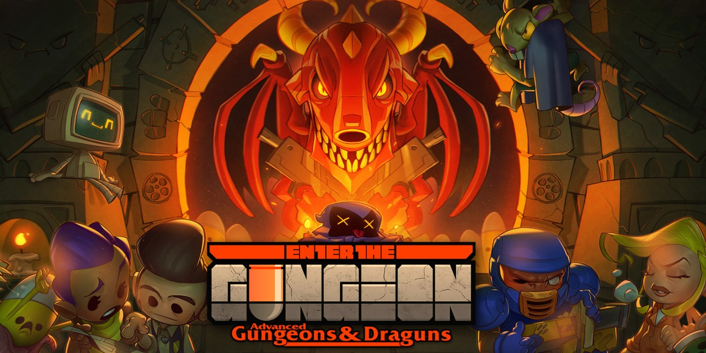
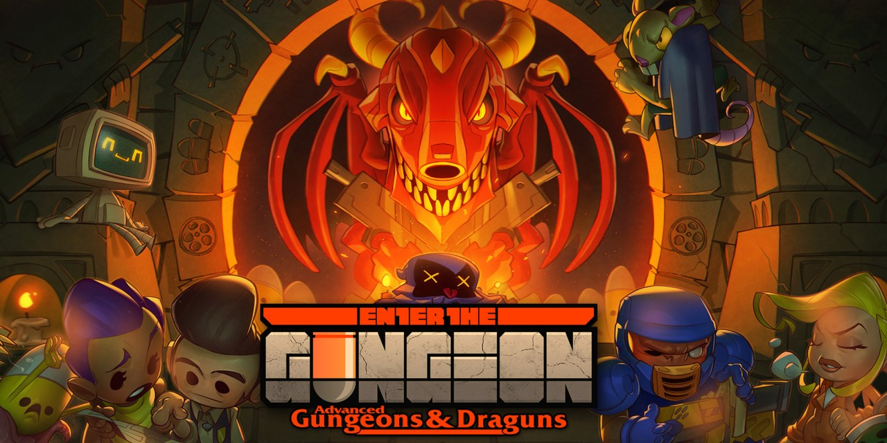
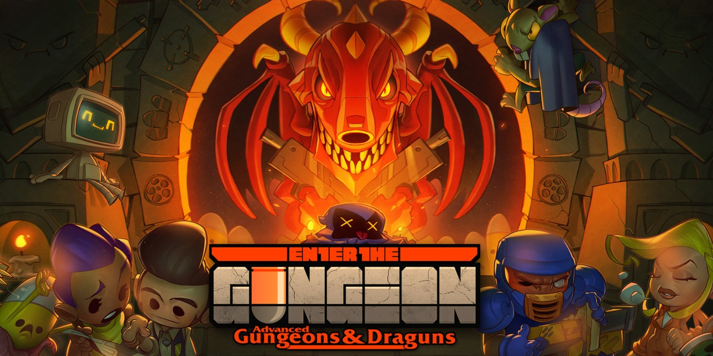

Картинки, прилагающиеся к играм в топе.

 

Roguelike (/roʊɡlaɪk/; буквально «rogue-подобные» (игры), сленг «рогалик») — жанр компьютерных игр, поджанр
компьютерных ролевых игр. Характерными особенностями классического roguelike являются генерируемые случайным
образом уровни, пошаговость и необратимость смерти персонажа — в случае его гибели игрок не может загрузить
игру и должен начать её заново. Многие roguelike выполнены в декорациях эпического фэнтези под сильным влиянием
настольных ролевых игр наподобие Dungeons & Dragons.
Жанр восходит к игре 1980 года Rogue. Хотя и до неё выходили подобные игры, такие как Beneath Apple Manor, именно Rogue стала
образцом для бесчисленных подражаний. Подобные игры, распространявшиеся в виде открытого кода, были крайне популярны в
среде американских программистов и студентов в 1980-х — 1990-х годах. При наличии множества вариантов и различий между отдельными
играми основные принципы геймплея roguelike оставались неизменными. В 2008 году эти консервативные принципы были описаны
в рамках так называемой «Берлинской интерпретации».
